The story
Validation: how we know what we know
Every number on this site comes from a split that holds out whole generators and whole speakers, never single clips. Selection uses only out-of-fold scores; the holdout is read once per model; In-the-Wild is never trained on; the test set is unlabeled and only its share above 0.5source: README.md, section validation is watched. The fusion rule was chosen by rules written down before the results existed.
Folds by generator and speaker, never by clip



Mermaid source
%% How the data is split: by generator and by speaker, never by clip.
%% cites: docs/architecture.md#8-validation-and-selection, README.md#validation
flowchart TB
FF["fold file · 20,000 training rows<br/>fakes grouped by generator · real speech by speaker"]
subgraph inner["five inner folds · 16,142 rows · each holds out whole generators"]
f0["fold 0 · grad_tts, unit_speech"]
f1["fold 1 · diffgan_tts, openvoicev2"]
f2["fold 2 · pro_diff, xtts_v2"]
f3["fold 3 · your_tts"]
f4["fold 4 · elevenlabs"]
end
HO["outer holdout · 3,858 rows<br/>playht + wavegrad2 + 26 real-speech groups<br/>read once per model, never selected on"]
ST["stress sets · never trained on<br/>In-the-Wild: 2,000 real, 1,000 fake"]
TE["NSA test set · 1,671 files · unlabeled<br/>only the share above 0.5 is watched"]
FF --> inner
FF --> HO
inner -->|"every learned piece fit fold-locally:<br/>scalers, Platt maps, fusion weights"| OOF["out-of-fold scores<br/>the only selection signal"]
HO --> HC["holdout readout"]
ST --> SR["false-alarm readout on<br/>unfamiliar real speech"]
TE --> TC["the TSV"]
classDef data fill:#e9eff6,stroke:#005493,color:#101a2b
classDef never fill:#fff3d1,stroke:#c37530,color:#101a2b
class FF,f0,f1,f2,f3,f4,OOF data
class HO,ST,TE never
- The fold file has 20,000source: README.md, section validation rows: 10 DiffSSD generators, LJ Speech and LibriSpeech. Fakes are grouped by generatorA text-to-speech or voice-cloning system that produced synthetic clips. Folds hold out whole generators so that every readout is on synthetic speech from a system the model never saw.; real speech by speaker (LJ, a single speaker, by chapter). Five inner foldsThe five training folds. Each holds out whole generators, so a model is always tested on synthetic speech from a system it never trained on. Scalers, calibration and fusion weights are fitted inside each fold as well. each hold out whole generators: grad_tts + unit_speech, diffgan_tts + openvoicev2, pro_diff + xtts_v2, your_tts, ElevenLabs. Every learned piece of a detector, scalers and Platt maps included, is fit fold-locally, and selection uses only inner out-of-foldA score a model gives to a training row it never saw: the training data is split into folds, and each row is scored by the model fitted on the other folds. Every selection decision in this project uses out-of-fold scores. scores.
- One outer holdoutA slice of the training data that no model was ever fitted, tuned or selected on: two generators and a set of real-speech groups. Each model reads it once. With only two held-out generators it is noisy, so small differences on it are not evidence., read once per model: PlayHT and WaveGrad2 plus 26 real-speech groups (3,858source: README.md, section validation rows). Nothing was ever trained, tuned or selected on it. Extra training data (ASVspoof 2019 real speakers, MLAAD, the rest of DiffSSD) enters inner folds only, so holdout numbers stay comparable across every model.
- The holdout has a resolution floor. With two held-out generators its noise is about ±0.07–0.10source: README.md, section validation, so we treat any gap under 0.15source: README.md, section validation as noise. It can tell a good detector from a bad one, not a good fusion rule from a slightly better one.
- In-the-WildA public set of web-sourced real and fake speech, used only as a stress test for false alarms on unfamiliar real voices. Nothing was ever trained on it. is the stress test: 3,000source: README.md, section validation clips (2,000source: README.md, section validation real from 54 speakers, 1,000source: README.md, section validation fake), evaluation only, never trained on. For each model we report minDCF and the false-alarm rate at the threshold chosen on inner folds, under both cost weightings.
- The test set as a smoke alarm. We track the share of test files scored above 0.5source: README.md, section validation against the ~30%source: README.md, section validation the brief states. It flagged the band mismatch. It is never a selection signal: any monotone rescaling changes it without changing minDCF.
Source: the README's validation section.
The pre-declared sweeps
The fusion rule got where it is in two steps, each written down before any result was run. Source: "The fusion rule" in the README and the sweep report.
Step 1, frozen at 08:13
- Candidates: a rank blend (1−α)·rank(M1b) + α·rank(handcrafted) for α from 0 to 0.5source: README.md, section the-fusion-rule; min and max rules; a cascade; a non-negative stacker shrunk toward equal weights. Then, on top of the winner, Spectra as a false-alarm suppressor.
- Rule: keep candidates within 0.03source: README.md, section the-fusion-rule of the best inner out-of-fold score whose In-the-Wild minDCF under the sponsor code's cost is ≤ 0.45source: README.md, section the-fusion-rule. Among those, take the best In-the-Wild minDCF under the brief's cost, with ties going to more M1b. Add Spectra suppression only if it helps In-the-Wild by ≥ 0.01source: README.md, section the-fusion-rule without hurting inner or holdout by more than 0.01source: README.md, section the-fusion-rule. No iteration afterward.
- Result: α = 0.2source: README.md, section the-fusion-rule (tied with 0.3source: README.md, section the-fusion-rule; the tie went to more M1b). Adding Spectra suppression moved In-the-Wild from 0.322source: README.md, section the-fusion-rule to 0.260source: README.md, section the-fusion-rule and hurt nothing, so it was applied. Final: inner 0.140source: README.md, section the-fusion-rule, holdout 0.014source: README.md, section the-fusion-rule, In-the-Wild 0.260source: README.md, section the-fusion-rule (0.267source: README.md, section the-fusion-rule under the sponsor code's cost).
Step 2, the M5 addendum, ratified at noon
- Written at 08:35, before any run: two M5 candidates and a stricter replacement rule. Replace the frozen rule only if In-the-Wild improves by ≥ 0.01source: README.md, section the-fusion-rule under the brief's cost, gets no more than 0.01source: README.md, section the-fusion-rule worse under the sponsor code's, the holdout gets no more than 0.05source: README.md, section the-fusion-rule worse, and inner no more than 0.03source: README.md, section the-fusion-rule worse. The candidates: M5 as a second false-alarm suppressor (F) and M5 as a third rank input (A3).
- F missed the bar: its In-the-Wild gain was 0.003source: README.md, section the-fusion-rule.
- A3 at weight 0.2source: README.md, section the-fusion-rule, plus the same Spectra step, qualified: inner 0.135source: README.md, section the-fusion-rule vs 0.140source: README.md, section the-fusion-rule, holdout 0.0065source: README.md, section the-fusion-rule vs 0.014source: README.md, section the-fusion-rule, In-the-Wild 0.228source: README.md, section the-fusion-rule / 0.239source: README.md, section the-fusion-rule (brief / sponsor-code cost) vs 0.260source: README.md, section the-fusion-rule / 0.267source: README.md, section the-fusion-rule.
- We had predicted A3 would lose on short clips and LibriSpeech real speech. With the Spectra step it improved both.
- On the test set the switch changes little: Spearman 0.974source: README.md, section the-fusion-rule against the previous rule's scores, and 3 of 1,671source: README.md, section the-fusion-rule files cross 0.5source: README.md, section the-fusion-rule.
The day, in order
Times are Saturday, September 26, local to the event. Each entry links to the document that records it; where documents disagree by a few minutes the README's time is shown.
- First fusion: the two detectors averaged equally. Best holdout we had; doubled the In-the-Wild misses. README
- The rule frozen by the pre-declared sweep: α = 0.2source: README.md, section the-fusion-rule with Spectra suppression. README
- Two M5 candidates and a stricter replacement rule written down, before any run. README
- Addendum results appended; A3 w 0.2 + E qualifies; F does not. sweep report
- Held: the previous rule stays the draft-review payload; the runner side is built behind a flag. README
- Nathan ratifies the switch to A3 w 0.2 + E. README
- The draft sent to NSA by Discord DM as CrossExam_predictions.tsv. README
- The runner's default switched to the shipped constants file. STATUS
- The channel-robustness lane done: λ̂ corrected, the codec hunt negative, Spectra's suppression kept, the noise weakness found. STATUS
The draft review
For the draft reviewThe sponsor's one-time offer to score an early submission and return its minDCF. We sent the exact file we ship and decided in advance what each returned value would mean., we sent the exact TSV we ship on Saturday at 12:30 and decided in advance what each returned number would mean. NSA returned minDCF 0.0733source: README.md, section validation and EER 3.534%source: README.md, section validation. The minDCF fell in our pre-declared 0.00–0.20source: README.md, section validation band, so the rule stayed unchanged; the decoding table is on the metric page. Source: the README.